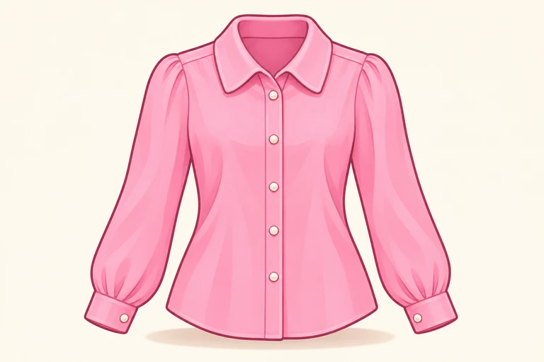
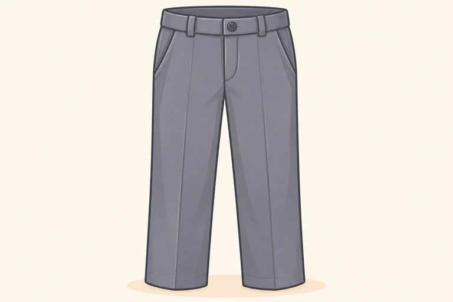

Unit 16 · Global Success 5 · Tập hai · Trang 40–45
Bài 1 · Từ và tranhBài 2 · Mẫu câu và nhịp câuBài 3 · Đọc, nghe và viết
Mỗi ngày thêm một điều em biết.
Học từ, nghe chậm, ABC và hội thoại; sáu đề theo ba cấp độ.
Bài1Mùa và thời tiếtSGK trang 40–41
How’s the weather in…?
spring — warm · summer — hot · autumn — cool · winter — cold How’s = How is. It is warm and rainy. Dùng in + mùa.
sunny: có nắng · rainy: có mưa · cloudy: có mây · dry: khô · humid: ẩm · windy: có gió · snowy: có tuyết. Câu hỏi và đáp án trong đề theo thẻ giả định; không phải dự báo thời tiết.
Bài2Em thường mặc gì?SGK trang 42–43
What do you usually wear in winter?

a blouse

trousers
jeans
a jumper
I wear a jumper. A blouse: áo kiểu · trousers: quần dài · jeans: quần bò · a jumper: áo len chui đầu. Do you wear, không dùng do you wears.
Dùng a blouse / a jumper. Với trousers / jeans, không thêm a. Cùng mùa, hai bạn có thể chọn trang phục khác nhau. Đọc đúng trường Usual clothes.
Bài3Ngữ điệu, đọc và viếtSGK trang 44–45
Câu kể xuống giọng cuối câu.
It’s cloudy in autumn. ↘ I wear jeans in winter. ↘ Phần đọc phân biệt bốn mùa ở miền Bắc và dry season / rainy season ở miền Nam. Không cho mọi nơi cùng một mô hình bốn mùa.
Thẻ tự soạn: An · spring · warm and rainy · a blouse. Viết theo thẻ: It is warm and rainy. I wear a blouse. Tự kiểm tra: có is chưa? Đúng mùa, thời tiết và trang phục chưa? Nghe Giỏi cần lấy hai thông tin đúng người.
Nội dung tự soạn, bám Unit 16 · Global Success 5, tập hai